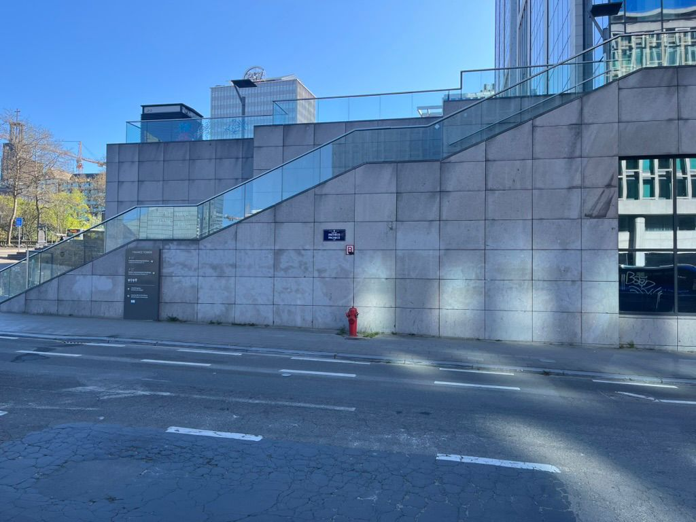

Boulevard Pachéco 17,
1000 Bruxelles
Escaliers et ascenseur
Accès est
Ableton Live
Ac stings Pizz stage
arpeggiator
ambiant compute
kick vinyl DLD3
Cymbal 808
Ac Flugelhor
-
8 mesures, 4/4
60 bpm
50°51'11.9"N 4°21'48.4"E